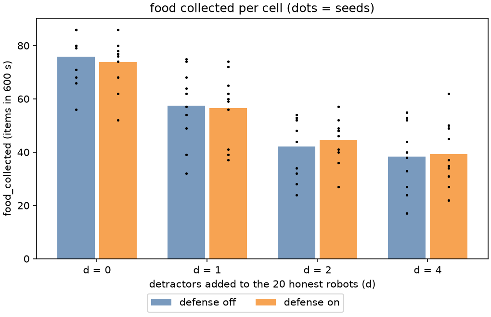
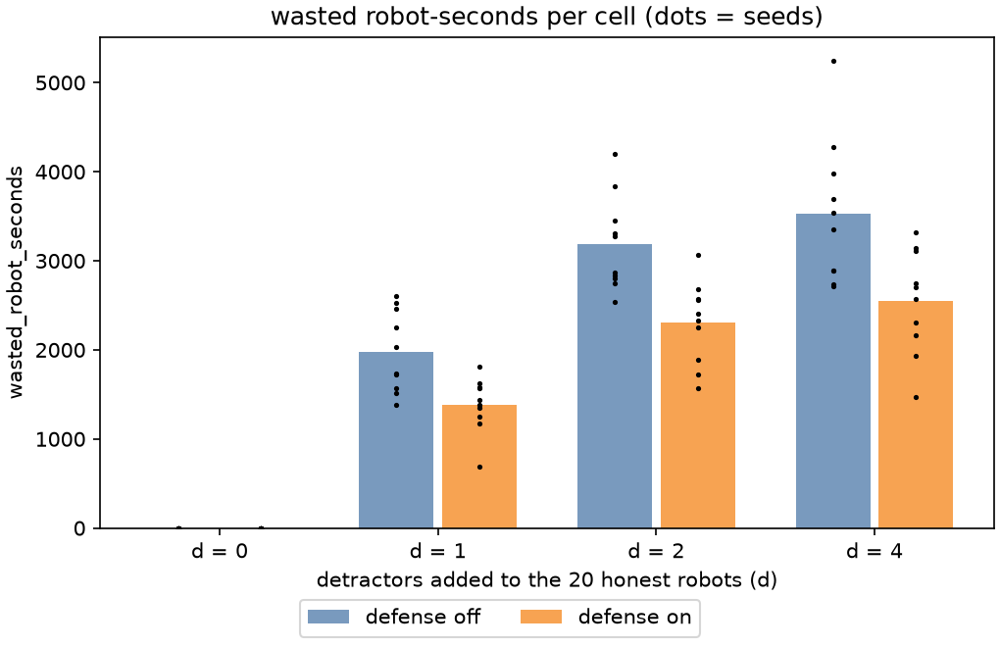

Stage report, step 5 of 6. Back to summary
Stage 5: analyze (G2)
| What | analyze.py computes R(d) with 95 % intervals, per-cell charts and event counts. |
|---|---|
| Why | Goal G2 is the recovered loss share. The cell charts show where the loss and the gain come from. |
| Input data | 80 manifests from runs/sweep/ (80 of 80 cells). |
| Output data | summary.csv, g2_stats.csv, events_by_cell.csv, g2_recovered_share.png, food_by_cell.png, wasted_by_cell.png. |
| Result (numbers) | defense cost F(0, on) - F(0, off) = -1.90; R(1) = -0.05 [-0.31, 0.13]; R(2) = 0.07 [-0.02, 0.15]; R(4) = 0.02 [-0.09, 0.14]. |
| Result (good or bad) | Good: the loss is resolved at every d > 0, so R(d) has intervals. |
| Status | ran |
Figure and table



| d | seeds | F(d, off) | F(d, on) | loss L(d) [95 %] | gain G(d) [95 %] | share R(d) [95 %] | note |
|---|---|---|---|---|---|---|---|
| 0 | 10 | 75.8 | 73.9 | n/a [n/a, n/a] | -1.90 [-5.00, 1.50] | n/a [n/a, n/a] | defense cost |
| 1 | 10 | 57.4 | 56.5 | 18.40 [12.20, 24.00] | -0.90 [-4.70, 2.50] | -0.05 [-0.31, 0.13] | |
| 2 | 10 | 42.1 | 44.4 | 33.70 [28.50, 39.40] | 2.30 [-0.70, 5.20] | 0.07 [-0.02, 0.15] | |
| 4 | 10 | 38.3 | 39.2 | 37.50 [30.10, 44.50] | 0.90 [-3.20, 5.50] | 0.02 [-0.09, 0.14] |
| n_det | defense | runs | mean_suspect_add | mean_cone_abort | mean_decoy_reach |
|---|---|---|---|---|---|
| 0 | 0 | 10 | 0.00 | 0.00 | 0.00 |
| 0 | 1 | 10 | 13.70 | 98.10 | 0.00 |
| 1 | 0 | 10 | 0.00 | 0.00 | 8.80 |
| 1 | 1 | 10 | 35.10 | 266.60 | 9.30 |
| 2 | 0 | 10 | 0.00 | 0.00 | 18.90 |
| 2 | 1 | 10 | 53.20 | 406.40 | 19.30 |
| 4 | 0 | 10 | 0.00 | 0.00 | 31.30 |
| 4 | 1 | 10 | 51.80 | 397.30 | 33.50 |
| note |
|---|
| R10: the d detractors are added to the 20 honest robots (D-005). They also crowd the arena, so part of the loss at d > 0 is crowding, not deception. |
| D-009: d = 1, 2, 4 use 1, 2, 2 decoys. Going from d = 2 to d = 4 raises the trail refresh rate, not the number of decoys. |
| R11: the cells of one seed share the layout (sources and decoys). Robot starts can differ across cells because the robot count differs, so the bootstrap pairs cells on layout, not on every robot start. |